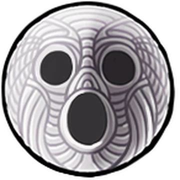

Weapons and powers
- The knight's main weapon is a nail, a sword that was standard use by the soldiers of Hallownest.

- Its powers include Soul manipulation (pretty much just magic), Health recovery, diving and creating shockwaves, using Soul to create high-reaching attacks, and making Soul projectiles.
Abilities
The knight doesn't start with much, but as the world is explored, they unlock new abilities

- Mothwing cloak: This cloak allows the Knight to dash to avoid danger.
- Mantis claw: The claw allows you to grab, slide, and jump off of walls.
- Crystal heart: The crystal heart allows the Knight to charge up a horizontal blast that clears large gaps
- Monarch wings: thi sitem gives the Knight a second jump to use.
- Isma's tear: consuming the tear allows for whoever consumed it to survive acid.
- Void cloak: and upgraded cloak that allows the Knight to phase through enemies without getting hit.